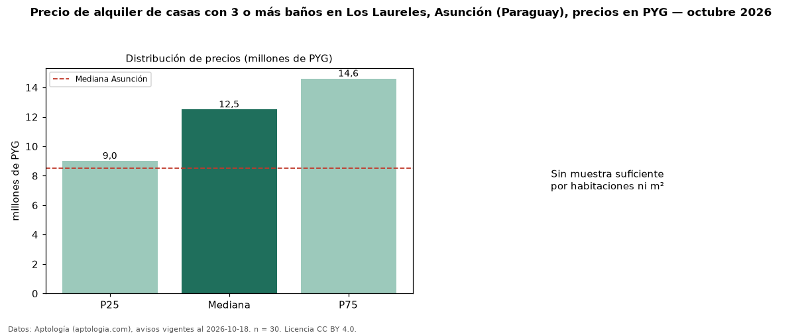

Precio de alquiler de casas con 3 o más baños en Los Laureles, Asunción (Paraguay), precios en PYG — octubre 2026
Con 30 avisos vigentes, el canon mediano de casas con 3 o más baños en alquiler en Los Laureles, Asunción (Paraguay) es PYG 12,50 millones al mes. Eso es 25 % más que la mediana de todas las casas en alquiler de Los Laureles (PYG 10 millones, n = 63); este segmento reúne el 48 % de esos avisos. El segmento con más oferta es el de 3 o más habitaciones (30 avisos, mediana PYG 12,50 millones). La mediana de todas las casas en alquiler de Asunción es PYG 8,50 millones (+47 % de diferencia). La mitad central de los avisos va de PYG 9,00 millones a PYG 14,60 millones (razón 1,6), una dispersión moderada. Datos: Aptología (aptologia.com), CC BY 4.0 — https://www.aptologia.com/py/alquiler/asuncion/los-laureles. Archivos: PDF, CSV con las cifras y gráfica PNG.

| Avisos únicos | 30 |
|---|---|
| Percentil 25 | COP 9.000.000 |
| Mediana | COP 12.500.000 |
| Percentil 75 | COP 14.600.000 |
Fuente: avisos vigentes de portales inmobiliarios recopilados por Aptología, deduplicados (mínimo 30 avisos únicos por celda). Precios pedidos, no cerrados. Fecha: 2026-10-18.